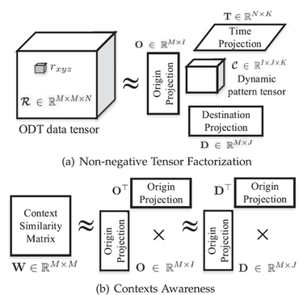

Current Visitors:
J. Wang, J. Wu, Z. Wang, F. Gao, and Z. Xiong
IEEE Transactions on Knowledge and Data Engineering (TKDE), 2019

Recent years have witnessed the world-wide emergence of mega-metropolises with incredibly huge populations. Understanding residents mobility patterns, or urban dynamics, thus becomes crucial for building modern smart cities. In this paper, we propose a Neighbor-Regularized and context-aware Non-negative Tensor Factorization model (NR-cNTF) to discover interpretable urban dynamics from urban heterogeneous data. Different from many existing studies concerned with prediction tasks via tensor completion, NR-cNTF focuses on gaining urban managerial insights from spatial, temporal, and spatio-temporal patterns. This is enabled by high-quality Tucker factorizations regularized by both POI-based urban contexts and geographically neighboring relations. NR-cNTF is also capable of unveiling long-term evolutions of urban dynamics via a pipeline initialization approach. We apply NR-cNTF to a real-life data set containing rich taxi GPS trajectories and POI records of Beijing. The results indicate: 1) NR-cNTF accurately captures four kinds of city rhythms and seventeen spatial communities; 2) the rapid development of Beijing, epitomized by the CBD area, indeed intensifies the job-housing imbalance; 3) the southern areas with recent government investments have shown more healthy development tendency. Finally, NR-cNTF is compared with some baselines on traffic prediction, which further justifies the importance of urban contexts awareness and neighboring regulations.
@article{wang2019understanding,
title={Understanding urban dynamics via context-aware tensor factorization with neighboring regularization},
author={Wang, Jingyuan and Wu, Junjie and Wang, Ze and Gao, Fei and Xiong, Zhang},
journal={IEEE Transactions on Knowledge and Data Engineering},
year={2019},
publisher={IEEE}
}